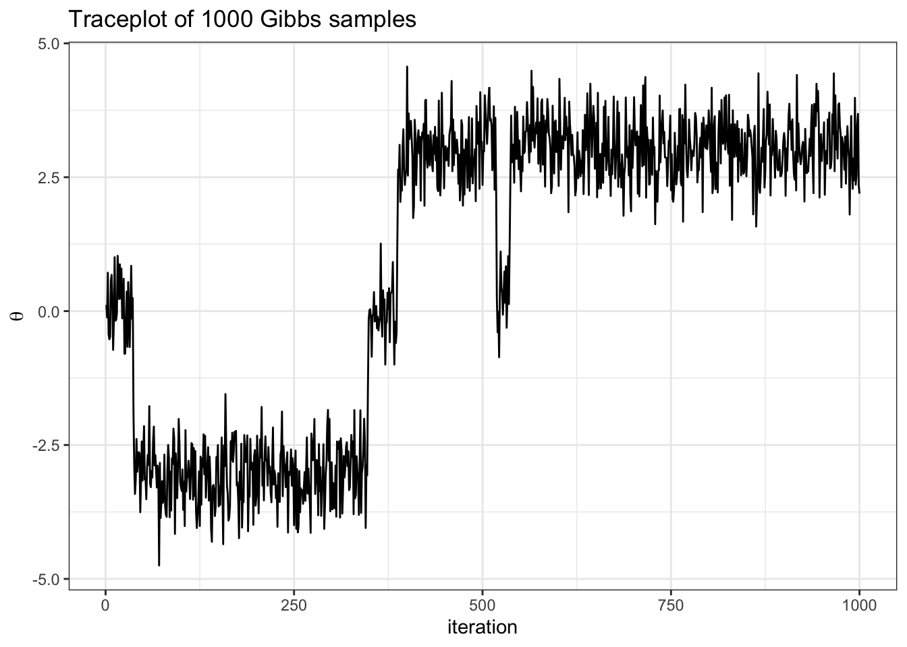

Gibbs sampling
Introduction
Let \(\theta_1, \theta_2\) be two unknown parameters that characterize the data generative model \(p(\mathbf{y} | \theta_1, \theta_2)\), where \(\mathbf{y} = \{y_1, \ldots, y_n\}\).
Recall the following definitions:
The full conditional posterior of \(\theta_1\) is the density of \(\theta_1\) conditional on all other parameters and the data. In the example above, \(p(\theta_1 |\theta_2, \mathbf{y})\) is called “the full conditional posterior of theta 1”.
The marginal posterior of \(\theta_1\) is the density of \(\theta\) given the data, but unconditional on any other model parameters. In the example above, \(p(\theta_1 | \mathbf{y})\) is called “the marginal posterior of theta 1”.
Notice that
\[ \underbrace{p(\theta_1, \theta_2 | \mathbf{y})}_{\text{joint posterior of } \theta_1, \theta_2} \ \ \ \ \ = \underbrace{p(\theta_1 |\theta_2, \mathbf{y})}_{\text{full cond'l posterior of }\theta_1} \cdot \underbrace{p(\theta_2 | \mathbf{y})}_{\text{marginal posterior of } \theta_2} \]
Gibbs sampler
Gibbs sampling is a special case of Metropolis-Hastings that proceeds as follows:
- sample \(\theta_1^{(s+1)}\) from \(p(\theta_1 | \theta_2^{(s)}, \mathbf{y})\)
- sample \(\theta_2^{(s+1)}\) from \(p(\theta_2|\theta_1^{(s+1)}, \mathbf{y})\)
iterate steps 1-2 a total of \(S\) times.
Prove that the algorithm described above is in fact a Metropolis-Hastings algorithm where \(J(\theta_i | \theta_i^{(s)}) = p(\theta_i | \theta_{j \neq i}, \mathbf{y})\) with acceptance probability 1.
Hint: recall that the Metropolis-Hastings acceptance ratio \(r\) is computed as follows:
\[ r = \frac{\pi(\theta^*)}{\pi(\theta^{(s)})} \times \frac{J(\theta^{(s)}| \theta^*)}{ J(\theta^{*}| \theta^{(s)}) } \]
Example
Imagine the following target distribution (the joint probability distribution of two variables, \(\theta\) and \(\delta\)).
library(tidyverse)
library(latex2exp)
set.seed(360)
## fixed values ##
mu = c(-3, 0, 3) # conditional means
sd = rep(sqrt(1 / 3), 3) # conditional sds
d = c(1, 2, 3) # sample space of delta
N = 1000 # number of samples
delta = sample(d, size = N, prob = c(.45, .1, .4), replace = TRUE)
theta = rnorm(N, mean = mu[delta], sd = sd[delta])
df = data.frame(delta, theta)
df %>%
ggplot(aes(x = theta, y = delta)) +
geom_bin2d(bins = 25) +
theme_bw() +
labs(y = TeX("\\delta"),
x = TeX("\\theta"))In this example,
\[ \begin{aligned} p(\delta = d) = \begin{cases} &.45 &\text{ if } d = 1\\ &.10 &\text{ if } d = 2\\ &.45 &\text{ if } d = 3 \end{cases} \end{aligned} \]
\[ \begin{aligned} \{\theta | \delta = d\} \sim \begin{cases} &N(-3, 1/3) &\text{ if } d = 1\\ &N(0, 1/3) &\text{ if } d = 2\\ &N(3, 1/3) &\text{ if } d = 3 \end{cases} \end{aligned} \]
Write down the full conditional distributions necessary to Gibbs sample the target.
Note: this is a toy example. We can sample from the target distribution directly as seen above. However, we will construct a Gibbs sampler for pedagogical purposes that will become apparent momentarily.
To construct a Gibbs sampler, we need the full conditional distributions.
- \(p(\theta | \delta)\) is given.
- \(p(\delta| \theta) = \frac{p(\theta | \delta = d) p(\delta = d)}{ \sum_{d=1}^3p(\theta | \delta = d)p(\delta = d)}\), for \(d \in \{1, 2, 3\}\).
Below the sampler is implemented and a trace plot for \(\theta\) reported.

## fixed values ##
mu = c(-3, 0, 3) # conditional means
s2 = rep(1 / 3, 3) # conditional sds
d = c(1, 2, 3) # sample space of delta
N = 1000 # chain length
w = c(.45, .1, .4) # delta probabilities
## Gibbs sampler ##
set.seed(360)
N = 1000 # number of Gibbs samples
theta = 0 # initial theta value
thd.mcmc = NULL
for(i in 1:N) {
d = sample(1:3 , 1, prob = w * dnorm(theta, mu, sqrt(s2)))
theta = rnorm(1, mu[d], sqrt(s2[d]))
thd.mcmc = rbind(thd.mcmc, c(theta,d))
}
# note we take advantage that sample() in R does not require the probability
# to add up to 1
df = data.frame(theta = thd.mcmc[,1],
delta = thd.mcmc[,2])
df %>%
ggplot(aes(x = seq(1, nrow(df)), y = theta)) +
geom_line() +
theme_bw() +
labs(y = TeX("\\theta"),
x = "iteration",
title = "Traceplot of 1000 Gibbs samples")- describe how we implement the conditional update for delta in the code above
- what do you notice from the traceplot above? Hint: you can imagine hopping from delta islands in the first figure of the joint target over parameter space.
Important
The picture to visualize is that of a particle moving through parameter space.
Let’s see how well our samples of \(\theta\) approximate the true marginal \(p(\theta)\).